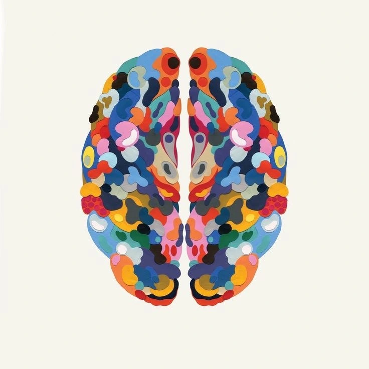
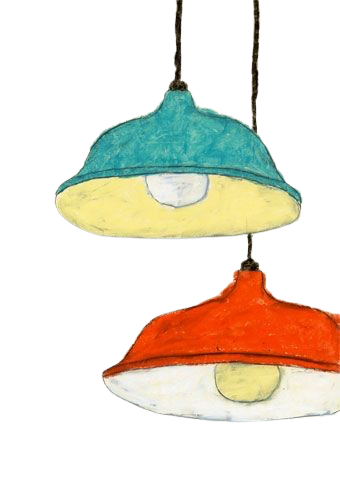

TDAH
EN LA ADOLESCENCIA
¿QUÉ ES?
Es un padecimiento que está causado por una diferencia en el cerebro que afecta a la atención y al comportamiento. Aunque suele diagnosticarse en la infancia, en muchos casos los síntomas persisten durante la adolescencia y la adultez.
Tipos de TDAH:
Inatención
Problemas para prestar atención, distraerse con facilidad, problemas para organizarse, seguir instrucciones o conversaciones.
Hiperactividad
-Impulsividad
Inquietud, hablar en exceso, problemas para controlar sus acciones y palabras.
Combinados
En este se presentan los dos anteriores y puede tener un variación en su intensidad.
¿POR QUÉ SE CAUSA?
En la actualidad aún no se sabe causa exacta de porque se desarrolla este padecimiento, pero algunos factores que se pueden tener en cuenta son:
- La heradibilidad
- Los genes
- Lesiones
cerebrales - El entorno social

¿CÓMO SE PUEDE SABER QUE TU HIJO PADECE DE ESTO?
Los síntomas de los adolescentes con TDAH son muy parecidos a los de los
niños,
pero es un poco más difícil identificarlos. Sin embargo aquí te dejamos algunos comportamientos que puedes llegar a tener en cuenta:
- Tener dificultades para escuchar
- Reacciona muy mal ante las frustraciones.
- Dificultad para mantener la atención a un estimulo o varios a la vez
- Casi siempre se olvida de hacer las cosas o empieza y no acaba.
- Hacer acciones precipitadas que pueden provocar un resultado negativo
- Tener dificultades para permanecer sentados en silencio cuando deben hacerlo
CONSEJOS GENERALES
Busque apoyo
Algo que debe de recordar es que al criar a un adolescente con TDAH no tiene porque hacerlo solo.
Paciencia

Recuerde que habrá dias buenos y otros no tanto, aún así evite concentrarse solo en las dificultades y mejor mantener una mente realista pero positiva
Aprender

Aprenda todo lo que pueda. Esto puede ayudarlo a tener más paciencia y sentirse menos frustrado por el comportamiento de su hijo